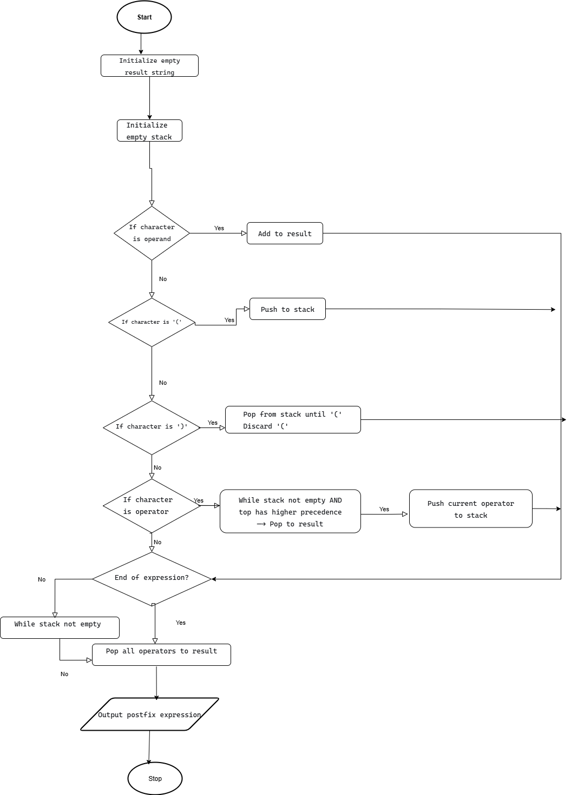
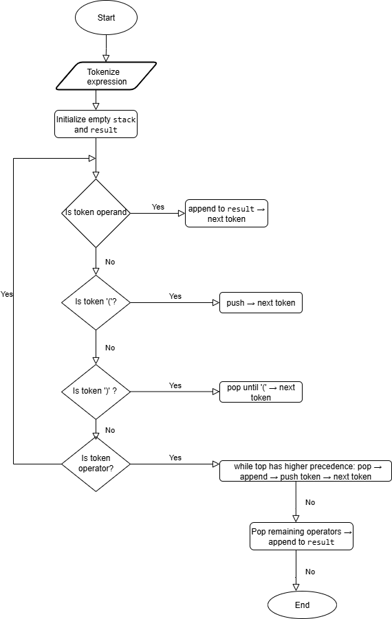
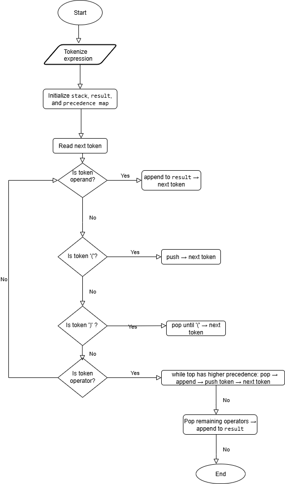

Infix To Postfix Conversion
Problem Statement
Convert a given infix expression (e.g., (A+B)*C) into its postfix form (e.g., AB+C*) using a stack.
Example: (A+B)*C → AB+C*
Approach 1: Simple Stack Traversal
Explanation: Traverse the infix expression, push operators to stack, append operands to output. Pop operators based on precedence and parentheses.
Time Complexity: O(n)
Space Complexity: O(n)
stack = empty
result = ""
for each character c in expression:
if c is operand:
append c to result
else if c is '(':
push c to stack
else if c is ')':
pop until '(' and append to result
else if c is operator:
while top of stack has higher precedence:
pop and append to result
push c to stack
pop remaining operators and append to result

Approach 2: Handle Multi-Character Operands (Better)
Explanation: Tokenize the expression to support multi-character operands, then apply same stack-based algorithm.
Time Complexity: O(n)
Space Complexity: O(n)
tokens = tokenize(expression)
stack = empty
result = ""
for each token:
if token is operand:
append token to result
else if token is '(':
push token
else if token is ')':
pop until '(' and append to result
else if token is operator:
while top has higher precedence:
pop and append to result
push token
pop remaining operators

Approach 3: Optimized Stack with Precedence Map (Optimal)
Explanation: Use a precedence map for operators to efficiently decide when to pop stack elements.
Time Complexity: O(n)
Space Complexity: O(n)
precedence = {'+':1, '-':1, '*':2, '/':2, '^':3}
stack = empty
result = ""
for each token:
if token is operand:
append to result
else if token is '(':
push to stack
else if token is ')':
pop until '('
else if token is operator:
while stack not empty and precedence[top] >= precedence[token]:
pop and append to result
push token
pop remaining operators
